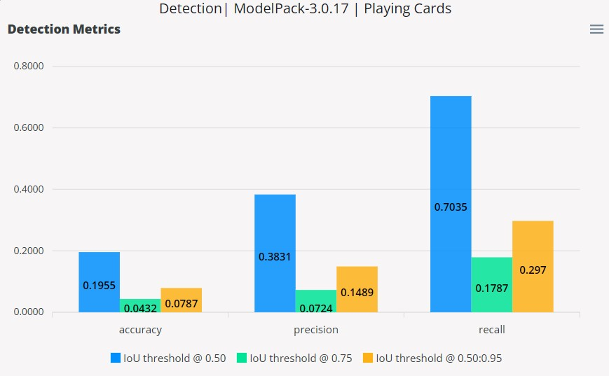
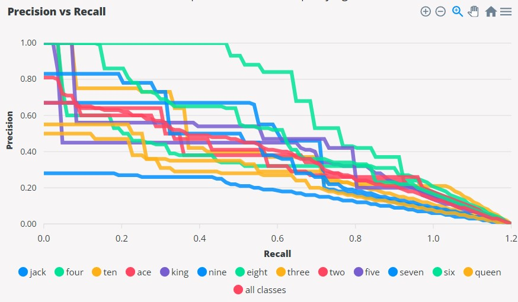
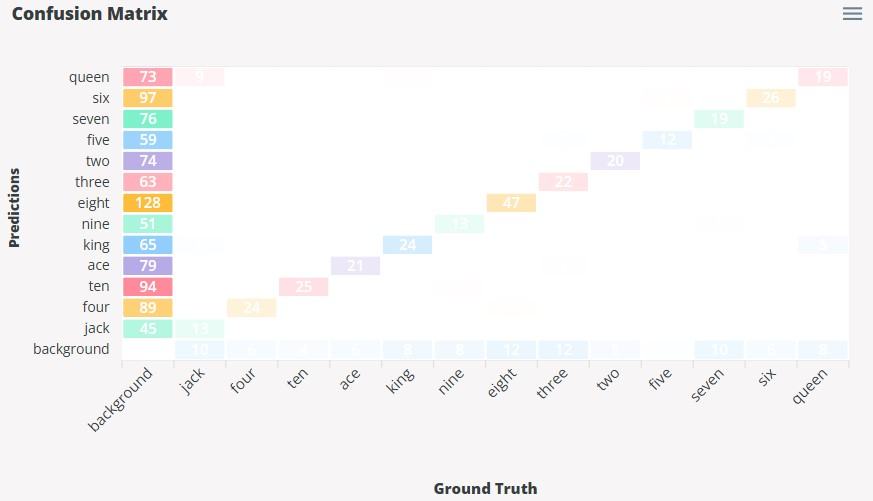
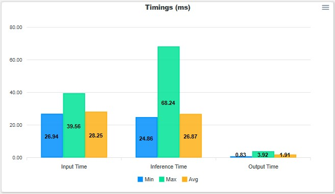
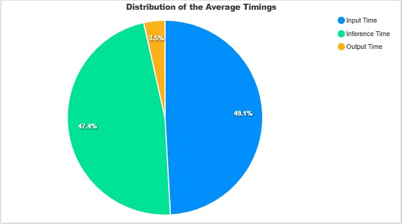

Detection Metrics
This section will describe the validation metrics reported in Validating Vision Models for object detection. The different types of validation methods available are Ultralytics, EdgeFirst, and YOLOv7. These validation methods have been implemented in EdgeFirst Validator to reproduce specific metrics seen in other applications. These metrics and their differences will be described in more detail below.
Ultralytics Detection Metrics
Mean Precision
This metric is defined as the average of the per-class precision values at the threshold where the mean F1 score is highest. This score reflects the overall ability of the model to avoid false positives across all classes.
Mean Recall
This metric is defined as the average of the per-class recall values at the where the mean F1 score is highest. This score reflects the model’s ability to find all relevant objects (true positives) across all classes.
F1 Score
The F1 score is the harmonic mean between precision and recall giving a single metric that balances both values — especially useful in object detection when you want to evaluate the trade-off between detecting objects correctly (recall) and avoiding false positives (precision).
The F1 equation is given as:
Note
The equations for precision and recall are provided in the glossary.
Mean Average Precision (mAP)
The mAP (mean Average Precision) is one of the most important metrics for evaluating object detection models. It measures how well your model balances precision and recall across different confidence thresholds and IoU thresholds.
- Precision: How many predicted positives are correct.
- Recall: How many actual positives were found.
- AP (Average Precision): The area under the precision–recall curve for a given class and IoU threshold.
- mAP (mean AP): The mean of all class-wise AP values, giving a single number for the model performance.
We provide the mAP score at the IoU thresholds (0.50, 0.75, and 0.50-0.95).
- mAP@0.50: Measures detection quality with lenient IoU threshold (0.50). This measures how many detections are correct (IoU ≥ 0.50).
- mAP@0.75: Stricter IoU requirement — better localization is required. This measures how many detections are correct (IoU ≥ 0.75).
- mAP@0.50-0.95: Average of APs from IoU 0.50 to 0.95 (step 0.05) — COCO metric. This is the standard COCO metric, averaged over 10 IoU thresholds.
EdgeFirst Detection Metrics
The EdgeFirst detection metrics describe the mean average precision (mAP), recall (mAR), and accuracy (mACC) at IoU thresholds 0.50, 0.75, and 0.50:0.95. These metrics are represented as a bar chart. Shown below is an example.

Overall Precision
Precision measures how well the model outputs correct predictions. Precision alone does not provide a final summary of the model performance because it only considers the ratio of the number of correct detections to the total number of detections. Consider a case where the model might have made 9 detections which are all correct and yields a precision of 100%, but there are 200 ground truth annotations, the model missed the rest of the 191 annotations which yields a recall of 4.5%.
Note
The equation for precision is shown in the Glossary.
Overall Recall
Recall measures how well the model finds the ground truth annotations. A similar idea is presented for recall, this metric only considers the ratio of correct detections against the total number of ground truths. However, it is possible that the model will correctly find all ground truth annotations, but it might have generated large amounts of localization false positives.
Note
The equation for recall is shown in the Glossary.
Overall Accuracy
This accuracy metric provides a better representation of the overall model performance over precision and recall. The accuracy metric aims to combine both precision and recall by considering correct detections (TP), false detections (localization FP and classification FP), and missed detections (FN). The accuracy is the ratio of the correct detections against all model detections and all ground truth objects. This metric aims to measure how well the model aligns its detections to the ground truth and a perfect alignment suggests zero missed annotations and zero false detections.
Mean Average Precision
This mAP metric is calculated using the same strategy as Ultralytics. The mAP is based on the area under the Precision versus Recall curve which plots the trade-off between precision and recall by adjusting the IoU thresholds. The average precision is first calculated by finding the area under the Precision versus Recall curve for each class at varying IoU thresholds. The mAP at 0.50 and 0.75 is the mean of the average precision across all classes, but only at the IoU threshold values of 0.50 and 0.75. For the case of mAP at 0.50:0.95, the average precision at 0.50:0.95 is first calculated by taking the mean of the average precision (area under the curve) across IoU thresholds 0.50 to 0.95 in 0.05 steps. This process is done per class and the final mAP at 0.50:0.95 is the mean of the average precision at 0.50:0.95 values across all classes.
Mean Average Recall
This metric is calculated as the sum of the recall values of each class over the number of classes at specified IoU thresholds.
The mean average recall at IoU thresholds 0.50 and 0.75 are calculated based on the equations below.
This metric is calculated as the sum of the recall values of each class over the number of classes. Specifying the IoU thresholds determines the strictness of true positive definitions. A detection is a true positive if it correctly identifies the ground truth, if it has a score greater than the score threshold, and if it has an IoU greater than the IoU threshold.
Note
The equation for recall is shown in the Glossary.
According to Tenyks Blogger (2023), "AR is defined as the recall averaged over a range of IoU thresholds (from 0.50 to 1.0). We can compute mean average recall (mAR) as the mean of AR across all classes". The metric for mAR[0.50:0.95] is calculated by taking the sum of mAR values at IoU thresholds 0.50, 0.55, ..., 0.95 and then dividing by the number of validation IoU thresholds (in this case 10).
Mean Average Accuracy
This metric is calculated as the sum of accuracy values of each class over the number of classes at specified IoU thresholds. The mean average accuracy at IoU thresholds 0.50 and 0.75 are calculated based on the equations below.
Note
The equation for accuracy is shown in the Glossary.
The following equation below calculates the mean average accuracy for a range of IoU thresholds from 0.50:0.95 which is calculated similarly to mean average recall.
Precision versus Recall
According to Mariescu-Istodor and Fränti (2023), "The performance is a trade-off between precision and recall. Recall can be increased by lowering the selection threshold to provide more predictions at the cost of decreased precision." The selection threshold is defined as the "score threshold" in EdgeFirst Validator to provide to the NMS to determine which detections are filtered based on the confidence scores meeting the criteria of this threshold. Lowering the threshold means less detections are filtered which can help in finding more ground truth objects (higher recall), but at the expense of possible incorrect detections (low precision).
The Precision versus Recall curve shows the trade-off between precision and recall. At lower thresholds, precision will tend to be lower due to increased leniency for valid detections. However, more detections will tend to result in higher recall as the model finds more ground truth labels. Increasing the threshold will start to increase precision for more precise detections, but will start to reduce recall due to the reduction of model detections. The following curve shows the Precision versus Recall trend for each of the classes in the dataset, along with the average curve for all the classes. A higher area under the curve, the better the model performance as this indicates maximized values for precision and recall throughout the varying thresholds.

Precision and recall are common metrics used for evaluating object detectors in machine learning. According to Mariescu-Istodor and Fränti (2023), "Precision is the number of correct results (true positives) relative to the number of all results. Recall is the number of correct results relative to the number of expected results" (p.1). In this case interpreting "all results" as the model's detection results and "expected results" as the ground truth in the dataset, precision is defined as the fraction of correct detections out of the total detections, and recall is defined as the fraction of correct detections out of the total ground truth.
Taking from Vignesh-Babu (2020) and Padilla, Passos, Dias, Netto, & Da Silva (2021), the equation for precision and recall is defined as the following.
However, on the account of the EdgeFirst Validator's method of classifying detections where false positives are further categorized as localization and classification false positives, then the total number of detections is really the sum of true positives, classification false positives, and localization false positives. The total number of ground truths is the sum of true positives, false negatives, and classification false positives as shown in the resulting image below.

In this image there are two true positives, one false negative, one classification false positive, and four ground truth objects. To agree with the definition of recall being the fraction of all correct detections over all ground truths, the number ground truth becomes the sum of true positives, false negatives, and classification false positives. The formulas are thus adjusted in the following way which is implemented in EdgeFirst Validator.
Confusion Matrix
The Confusion Matrix provides a summary of the prediction results by comparing the predicted labels with the ground truth (actual) labels. This matrix will show the ground truth labels along the x-axis and the predicted labels along the y-axis. Along the diagonal where both ground truth labels and prediction labels match shows the true positive (correct predictions) counts of that class. However, throughout validation, the matrix shows the cases where the model can misidentify labels (false positives) or fail to find the labels (false negatives). The first column where the ground truth label is "background" indicates the number of false positives are based on the model blindly detecting objects that are not in the image. The last row where the prediction label is "background" indicates the number of false negatives where the model did not detect any objects that are in the image.

Model Timings
The model timings measures the input time, inference time, and the output time. The input time is the time that it takes to preprocess the images which includes image normalization and image transformations such as resizing, letterbox, or padding. The inference time is the time that it takes to run model inference on a single image. The output time is the time that it takes to decode the model outputs into bounding boxes, masks, and scores. These timings are represented as a bar chart showing their minimum, maximum, and average.

Furthermore, the distribution of the average timings are also shown below as a pie chart.

Further Reading
This page has described the validation metrics and the formulas behind these computations. To better understand how detections are classified into true positives, false positives, and false negatives, see Object Detection Classifications.
Glossary
This section will explain the definitions of key terms frequently mentioned throughout this page.
| Term | Definition |
|---|---|
| True Positive | Correct model predictions. The model prediction label matches the ground truth label. For object detection, the IoU and confidence scores must meet the threshold requirements. |
| False Positive | Incorrect model predictions. The model prediction label does not match the ground truth label. |
| False Negative | The absence of model predictions. For cases where the ground truth is a positive class, but the model prediction is a negative class (background). |
| Precision | Proportion of correct predictions over total predictions. \(\text{precision} = \frac{\text{true positives}}{\text{true positives} + \text{false positives}}\) |
| Recall | Proportion of correct predictions over total ground truth. \(\text{recall} = \frac{\text{true positives}}{\text{true positives} + \text{false negatives}}\) |
| Accuracy | Proportion of correct predictions over the union of total predictions and ground truth. \(\text{accuracy} = \frac{\text{true positives}}{\text{true positives} + \text{false negatives} + \text{false positives}}\) |
| IoU | The intersection over union. \(\text{IoU} = \frac{\text{intersection}}{\text{union}} = \frac{\text{true positives}}{\text{true positives} + \text{false positives} + \text{false negatives}}\) |
References
Fränti, P., & Mariescu-Istodor, R. (2023, March 1). Soft precision and recall. https://doi.org/10.1016/j.patrec.2023.02.005
Babu, G. V. (2021, December 13). Metrics on Object Detection - gandham vignesh babu - Medium. Retrieved from Metrics on Object Detection
Padilla, R., Passos, W. L., Dias, T. L. B., Netto, S. L., & Da Silva, E. A. B. (2021, January 25). A Comparative Analysis of Object Detection Metrics with a Companion Open-Source Toolkit. A Comparative Analysis of Object Detection Metrics with a Companion Open-Source Toolkit | MDPI
Blogger, T. (2023, November 7). Mean Average Precision (mAP): Definitions & Misconceptions | Medium. Retrieved from Mean Average Precision (mAP): Common Definitions, Myths & Misconceptions